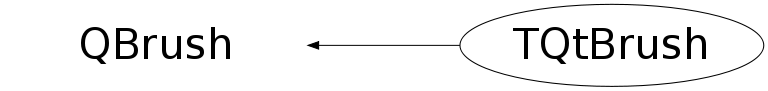

Function Members (Methods)
public:
| TQtBrush() | |
| TQtBrush(const TQtBrush& src) | |
| TQtBrush(const TAttFill& rootFillAttributes) | |
| virtual | ~TQtBrush() |
| static TClass* | Class() |
| const QColor& | GetColor() const |
| int | GetStyle() const |
| virtual TClass* | IsA() const |
| Bool_t | IsTransparent() const |
| TQtBrush& | operator=(const TAttFill& rootFillAttributes) |
| TQtBrush& | operator=(const TQtBrush&) |
| void | SetColor(const QColor& qtcolor) |
| void | SetColor(Color_t cindex) |
| void | SetFillAttributes(const TAttFill& rootFillAttributes) |
| void | SetStyle(int newStyle = 1000) |
| void | SetStyle(int style, int fasi) |
| virtual void | ShowMembers(TMemberInspector& insp) |
| virtual void | Streamer(TBuffer& b) |
| void | StreamerNVirtual(TBuffer& b) |
protected:
| void | SetColorOwn() |
Class Charts
{kind=link}
{kind=link}
{kind=link}
{kind=link}

Function documentation
void SetFillAttributes(const TAttFill& rootFillAttributes)
void SetColorOwn()
Set the brush color and adjust its alpha value from fStyle Take in account the new transperency if needed
void SetStyle(int style, int fasi)
Set fill area style index*-*-*-*-*- *-* ========================= *-* style : fill area interior style hollow or solid *
TQtBrush()
void SetStyle(int newStyle = 1000)